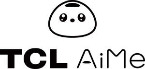

Trade Mark Journal No.2025/049 5 December 2025
UK00004266365 18 September 2025 (9,28)

- Class 9
- Computer programs for editing images, sound and video; Computer chatbot software for simulating conversations; Downloadable music files; Interactive multimedia computer game programs; Interactive touchscreen terminals; Navigation computers for cars; Operating system programs; Portable media players; Smartwatches; Telepresence robots; User-programmable humanoid robots, not configured; Wearable computers; Interactive multimedia computer game program; Smart glasses; Computer hardware; Computer programs, downloadable; Computer programs, recorded; Dashboard cameras; Parking meters; Smart speakers; Facial recognition equipment; Car audio apparatus; Downloadable computer software for collecting, analyzing and organizing data in the field of deep learning; Headphones; Voice transmission apparatus; Security surveillance robots; Humanoid robots having communication and learning functions for assisting and entertaining people; Virtual reality hardware; Virtual reality headsets; Humanoid robots with artificial intelligence for preparing beverages; Humanoid robots with artificial intelligence for use in scientific research; Machine learning software; Teaching robots; Remote controls; Remote control apparatus; Robot operating system [ROS]; Application software for robots; Robotic electrical control apparatus; Digital controls for robots; Software for robotics programming; Downloadable application software for robots; Electronic control apparatus for robots; Robotic Process Automation [RPA] software; Humanoid robots for helping with daily chores for household purposes; Humanoid robots having communication and learning functions for entertaining people; Humanoid robots with artificial intelligence for use in household cleaning and laundry; Car navigation computers; Computer operating system programmes; User-programmable unconfigured humanoid robots; Downloadable mobile operating system software; Downloadable computer software for data collection, analysis, and curation in the field of deep learning; Computer programs for use in connection with surround sound; Earphones for use with voice transmission equipment; Head-mounted virtual reality apparatus; Humanoid robots with communication and learning functions for assisting humans and providing entertainment; Humanoid robots with artificial intelligence for use in scientific research.
- Class 28
- Apparatus for games; table-top games; ornaments for Christmas trees, except lights, candles and confectionery; Action doll toys; Talking Dolls; balls for games; Toy models; toy robots; Drones [toys]; Toys.
TCL Technology Group Corporation
Representative: Trademarkit LLP